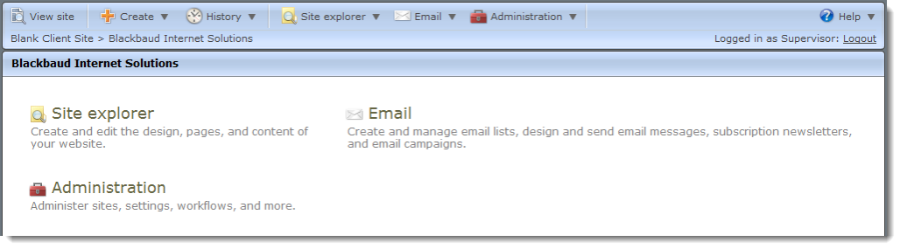
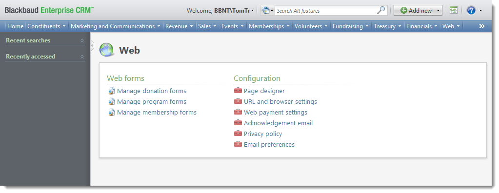
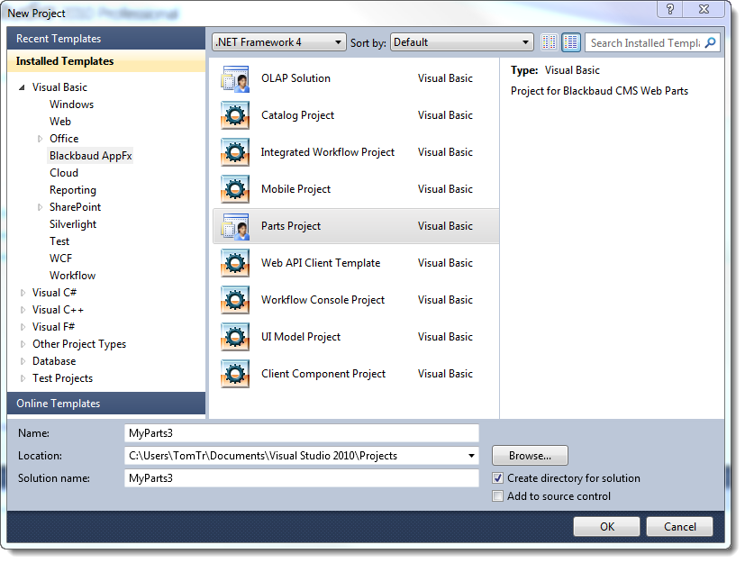

A production BBIS environment can be complex. Aside from BBIS, there will be a Blackbaud CRM installation and any number of other items in your enterprise setup. When you create your development environment, you may need to consider whether it reflects the complexity of the production environment. Will you have a separate sandbox environments? Will those mirror the complexity of the production environment? The guidance here will show you how to build a minimalist single machine development environment. From there, you can add complexity.
The installation and upgrade guide for Infinity programs is located at: https://www.blackbaud.com/files/support/guides/bbnc/bbinstal.pdf. That guide discusses several paths depending on the solution configuration. This documentation focuses on the Blackbaud CRM and Blackbaud Internet Solutions upgrade path.
On that developer machine, install Blackbaud CRM and Blackbaud Internet Solutions. The downloads page for Blackbaud CRM is https://www.blackbaud.com/default.aspx?pgpId=2255&ID=131&Bundle=Blackbaud+Enterprise+CRM.
Note A password for the downloads page is required. Only the downloads available to your organization appear. There may be multiple versions of Blackbaud CRM available.
We recommend you read through the system requirements and installation instructions prior to running the installer.
Install the Infinity SDK. The downloads page for the Infinity SDK is https://www.blackbaud.com/default.aspx?pgpId=2255&ID=193&Bundle=Blackbaud+Infinity+SDK. Run the installer as an Administrator.
Note A password for the downloads page is required. Only the downloads available to your organization appear.
A Blackbaud Internet Solutions (BBIS) installation assumes a Blackbaud CRM installation. When you install Blackbaud CRM, you select whether to install BBIS items. If you already use Blackbaud CRM but not BBIS, an upgrade that includes BBIS may be performed on an existing installation of Blackbaud CRM. For general information about Blackbaud CRM, see https://www.blackbaud.com/fundraising-crm/blackbaud-nonprofit-crm.aspx. To learn about how to use Blackbaud CRM, read the user guides at https://www.blackbaud.com/howto/crm.aspx. Blackbaud CRM is built on Blackbaud's Infinity platform.
Blackbaud Internet Solutions (BBIS) is a content management system for websites that integrates with Blackbaud CRM. To learn about how to set up and use BBIS, read the user guides at https://www.blackbaud.com/howto/crm.aspx#BBIS. BBIS shares many features with Blackbaud NetCommunity, including a web-based interface.

The major difference is that Blackbaud NetCommunity integrates with solutions such as The Raiser's Edge version 7 and BBIS integrates with Blackbaud CRM. BBIS functionality surfaces in the Webarea of Blackbaud CRM.

Blackbaud CRM is built on Blackbaud's Infinityplatform. Depending on the solution, the Infinityplatform includes an SDK and web APIs. Blackbaud CRM includes both. When you develop using the Infinity SDK, you create specs which define features. You load the specs into a catalog. But the Infinity SDK also includes a project template that supports adding custom parts to BBIS.
When you customize BBIS, you may find that you only need to create custom parts. But if your customization involves custom integration with Blackbaud CRM, you may need to access Blackbaud CRM through one of its web APIs. If you need to customize an API, you may need to use other parts of the Infinity SDK.
